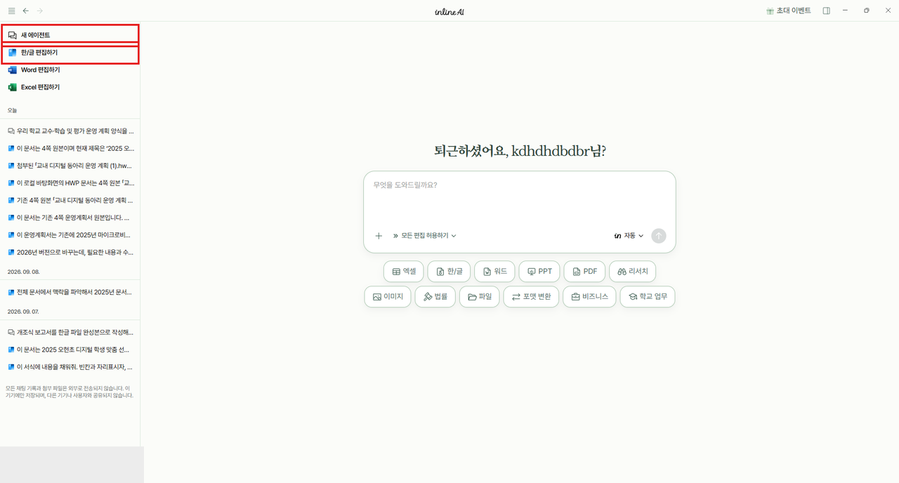
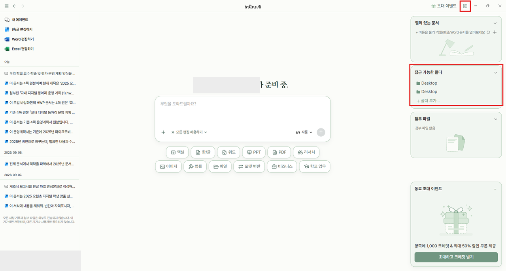
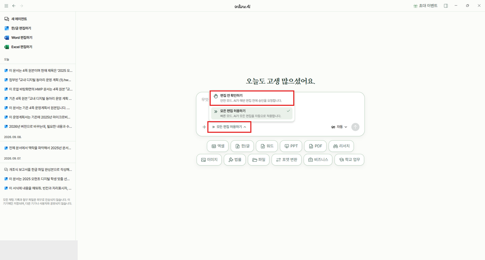
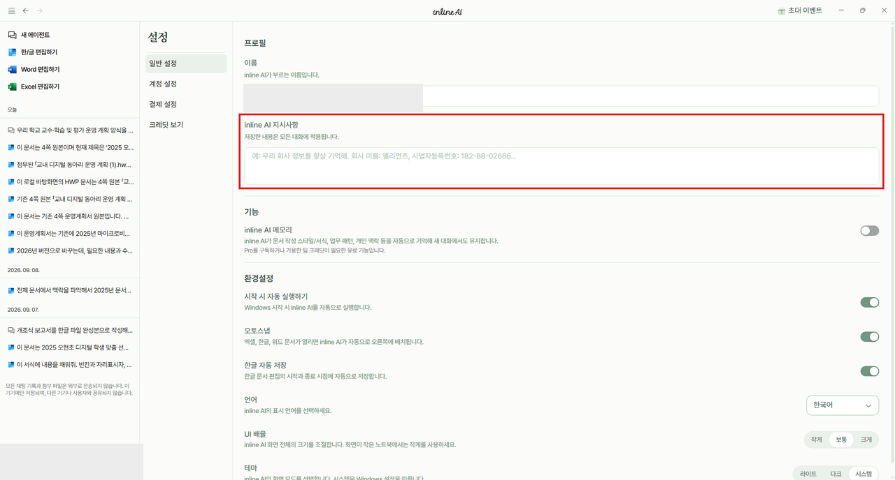
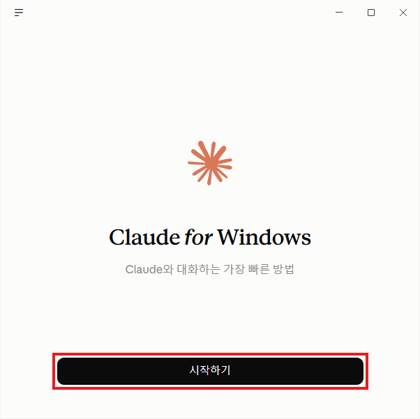
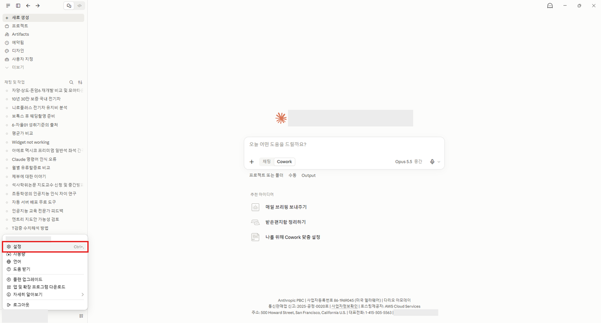
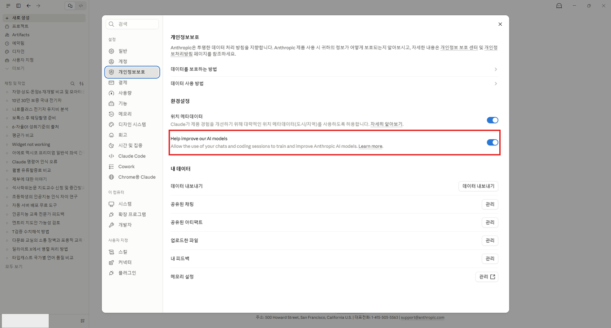
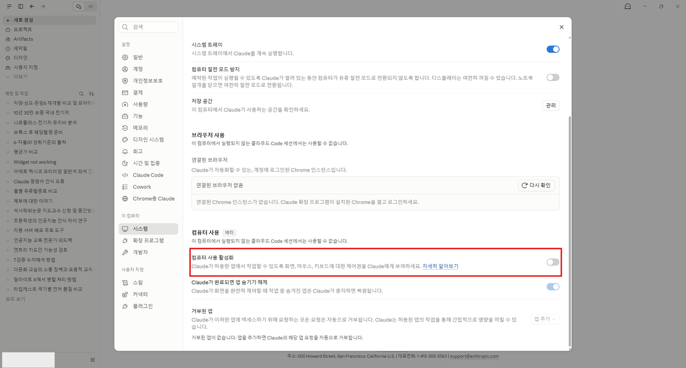
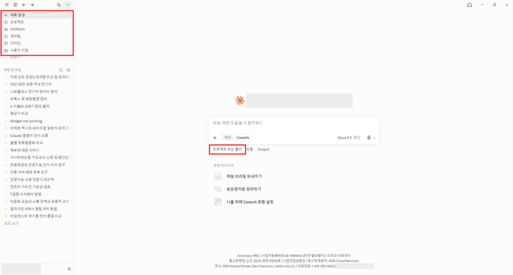

S001 · 표지 · 10초 — 교원 연수 · inline AI / 내 업무 파일, / AI에게 맡겨 보기
반갑습니다. 오늘 두 시간 동안 선생님 노트북에 AI를 들이고, 진짜 업무 파일을 맡겨 볼 거예요.
S002 · 한 문장 · 10초 — 내 컴퓨터 안에서 / 일하는 AI
오늘 쓰는 inline AI는 웹사이트 채팅창이 아니라 선생님 컴퓨터에 깔려서, 컴퓨터 안의 파일을 직접 여는 AI예요. 이게 무엇이 좋은지 두 가지만 먼저 말씀드릴게요.
S003 · 카드3 · 30초 — 로컬이라 좋은 점 / 큰 파일도 OK / 여러 개 한 번에 / 일괄 처리
첫째, 용량이 큰 파일도 다룰 수 있어요. 채팅창에 올릴 때처럼 몇 MB 제한에 걸리지 않아요. 둘째, 파일 여러 개를 한 번에 읽고 대조할 수 있어요. 계획서와 예산표, 가정통신문을 같이 놓고 맞춰 보는 식이죠. 셋째, 폴더 하나를 통째로 맡겨 일괄로 처리해요. 파일 50개 정리, 이름 한꺼번에 바꾸기 같은 일이요.
S004 · 한 문장 · 15초 — 파일은 내 컴퓨터에 / 밖으로 덜 나가요
넷째, 데이터가 밖으로 덜 나가요. 파일을 웹에 통째로 올리는 게 아니라 내 컴퓨터에 그대로 두고 필요한 부분만 AI가 읽어요. 그래도 '0'은 아니에요. 학생 실명·연락처가 든 파일은 오늘처럼 이름을 바꾼 연습 파일로 먼저 해 보세요.
S005 · 카드3 · 30초 — 에이전트 AI라서 / 켜 두면 알아서 편집 / 쭉 쌓여요 / 맥락이 생겨요
그리고 inline AI는 묻는 말에 답만 하는 챗봇이 아니라 '에이전트'예요. 첫째, 일을 시켜 두면 알아서 문서를 열고 고치고 저장해요. 그동안 저는 다른 일을 하면 돼요. 둘째, 한 번 해 두면 결과가 폴더에 쌓여서, 다음 달에는 그 위에 이어서 데이터를 누적할 수 있어요. 셋째, 우리 학교 양식·규칙·작년 문서가 폴더에 모이면 그게 AI의 '맥락'이 돼요. 오늘 나눠 드리는 00_업무 지침 폴더가 바로 그 맥락이에요.
빠른 AI가
좋은 AI일까요?
▶ 사람처럼 컴퓨터를 쓰는 AI

S006 · 한 문장 · 10초 — 빠른 AI가 / 좋은 AI일까요?
질문 하나 드릴게요. 오늘 써 보니 어떠셨어요? 빨리 답하는 AI가 좋은 AI일까요? (잠깐 대답을 들어 봅니다.)
S007 · 캡처 · 60초 — 사람처럼 컴퓨터를 쓰는 AI
짧은 영상 하나 볼게요. AI가 사람처럼 화면을 보고, 마우스를 움직이고, 직접 프로그램을 다루는 모습이에요. 빠르진 않죠? 대신 사람이 하던 일을 처음부터 끝까지 스스로 해요.
S008 · 한 문장 · 20초 — 요즘은 오래 걸려도 / 검토할 게 적은 AI
요즘 추세는 반대예요. 빨리 대충 답하는 것보다, 일을 맡겨 두면 스스로 자료를 읽고 확인하고 고치면서 오래 일하는 쪽으로 가고 있어요. 그래서 한 번 맡기면 30분, 1시간씩 걸리기도 해요. 대신 돌아와서 내가 검토하고 고칠 일이 점점 줄어들어요. 그러니 AI를 앞에 두고 기다리지 말고, 시켜 두고 다른 일을 하세요. 오늘 실습도 그렇게 해 볼 거예요. 마지막에 '아침 루틴'으로 다시 정리해 드릴게요.
S009 · 한 문장 · 20초 — 배우는 연수가 아니라 / 맡겨 보는 연수입니다. / 두 시간 뒤, 문서가 남아요
오늘은 AI를 공부하는 시간이 아니에요. 선생님 컴퓨터에 있는 업무 파일을 AI에게 맡겨 보는 시간입니다. 두 시간 뒤에는 가정통신문, 기안문, 발표 자료가 하나씩 손에 남아요.
S010 · 캡처 · 25초 — 선생님 다운로드 폴더도 / 이렇죠?
자료 하나 먼저 보여 드릴게요. 공문, 계획서 최종_진짜최종, 카톡 사진, 설치 파일이 한데 섞여 있어요. 선생님 다운로드 폴더도 비슷하시죠? 오늘 첫 실습이 바로 이 폴더 정리예요.
S011 · 알약 모음 · 40초 — ① 일단 던지세요 / ② 내 컴퓨터에 초대 / ③ 정해진 양식 주기
오늘 원칙은 세 가지예요. 첫째, 잘 쓴 프롬프트를 고민하기 전에 한 줄이라도 먼저 시켜 봅니다. 둘째, 복사해 붙이지 말고 파일과 폴더를 열어 둔 채 AI를 그 자리에 부릅니다. 셋째, '알아서 예쁘게'보다 '우리 학교 양식 그대로'가 훨씬 정확해요. 그리고 긴 설명보다 자료 하나가 더 강력한 예시예요.
S012 · 단계123 · 30초 — 모든 실습은 이 순서 / ① 파일 열기 ② 한 줄로 시키기 / ③ 확인
오늘 모든 실습은 같은 순서로 돌아가요. 파일 열고, 한 줄로 시키고, 결과를 확인합니다. 마음에 안 들면 처음부터 다시가 아니라 고칠 곳만 다시 시켜요. 말로 듣는 것보다 해 보는 게 빨라요. 설치부터 같이 할게요.
S013 · 섹션 표지 · 20초 — 00 준비 / AI를 내 컴퓨터에 초대해요 / 설치 · 폴더 · 매뉴얼
AI를 내 컴퓨터에 초대하는 단계예요. 설치하고, 폴더 하나 열어 주고, 우리 학교 규칙 한 장만 쥐여 주면 끝입니다. 20분 잡았어요. 천천히 같이 갑니다.
준비 1 · 준비 2
AI를 내 컴퓨터에 초대해요| 단계 | 할 일 | 화면 | |
|---|---|---|---|
| 1 | 설치 | inline-ai.com → '개인용' → Windows용 다운로드 |  |
| 2 | 로그인 | 계정 만들기 · 로그인 |  |
| 3 | 초대 코드 | K2YERY3H · 1,000 크레딧 | |
| 4 | 폴더 하나만 초대 | 폴더 추가… → inlineAI_실습 |  |
| 5 | 승인 모드 확인 | 모든 편집 허용하기 그대로 |  |
| 6 | 지시사항 | 일반 설정 → inline AI 지시사항에 붙이기 |  |
S014 · 단계123 · 30초 — 준비 1 / ① 설치 ② 로그인 ③ 초대 코드
앞의 세 단계는 프로그램 깔고 들어가는 단계예요. 설치 7분, 로그인 3분, 초대 코드 2분 정도 걸려요. 먼저 끝난 분은 옆 분을 도와주세요.
S015 · 단계123 · 30초 — 준비 2 / ① 폴더 하나만 초대 ② 승인 모드 확인 / ③ 지시사항
뒤의 세 단계가 오늘의 핵심 설정이에요. 실습 폴더 하나만 AI에게 열어 주고, 승인 모드는 '모든 편집 허용하기' 그대로인지 보고, 우리 학교 규칙 일곱 줄을 붙여 넣습니다. 이 세 가지만 해 두면 오늘 실습이 훨씬 안전해요.
S016 · 캡처 · 40초 — inline-ai.com / 위쪽 '개인용' 누르기
인터넷 창에 inline-ai.com 을 쳐 주세요. 첫 화면은 기업용 안내예요. 위쪽의 '개인용'을 누르세요. '무료 상담 신청하기'는 기업 상담이라 누르지 않아도 돼요.
참가자 행동: ① 인터넷 창 주소칸에 inline-ai.com 입력 → Enter / ② 화면 위쪽 메뉴의 '개인용 ↗' 클릭 / ③ '무료 상담 신청하기'는 누르지 않기
Windows용 다운로드
개인용 페이지에서 'Windows용 다운로드'를 누르면 설치 파일이 내려받아져요. 파일 이름은 inline-ai-v0.4.6-win-x64.exe 예요(10/5 기준, 당일 버전 숫자는 다를 수 있어요).
S017 · 캡처 · 40초 — Windows용 다운로드
개인용 페이지에서 'Windows용 다운로드'를 누르면 설치 파일이 내려받아져요. 파일 이름은 inline-ai-v0.4.6-win-x64.exe 예요(10/5 기준, 당일 버전 숫자는 다를 수 있어요). 맥은 지원 여부 [확인 필요]라 오늘은 윈도우 노트북으로 해요.
참가자 행동: ① 'Windows용 다운로드' 클릭 / ② 브라우저 아래(또는 오른쪽 위)에 내려받기 완료 표시 확인
S018 · 캡처 · 150초 — 받은 파일 두 번 클릭 / 설치
내려받은 파일을 두 번 눌러 설치해요. 설치되는 동안 제 화면을 봐 주세요. 설치 파일과 실습 자료는 모두 강의 사이트 QR로 받아요.
참가자 행동: ① 다운로드 폴더에서 inline-ai-…-win-x64.exe 두 번 클릭 / ② 설치 창이 끝날 때까지 기다리기
S019 · 알약 모음 · 45초 — 설치가 막히면 / 관리자 권한으로 실행 / 추가 정보 → 실행 / 핫스팟
설치가 안 되면 설치 파일을 마우스 오른쪽 → '관리자 권한으로 실행' 해 보세요. 학교 노트북은 이 권한이 막혀 있는 경우가 많아요. 'Windows의 PC 보호' 파란 창이 뜨면 '추가 정보' → '실행'을 누르시면 돼요. 학교 와이파이에서 멈추면 휴대폰 핫스팟으로 바꿔 보세요. 백신이 막았다고 뜨면 손 들어 주세요. 지금 안 되는 분은 옆 분 화면을 같이 보며 따라오시고 쉬는 시간에 다시 해요.
계정 만들기 · 로그인 → 초대 코드 넣기
초대 이벤트
K2YERY3H
무료 1,000 크레딧
설치가 끝나면 로그인 화면이 떠요. 처음이면 계정을 만들고 로그인하세요. 처음 가입하면 무료(Free) 플랜이고, 10/5 화면 기준 한 달에 500크레딧이에요.
S020 · 캡처 · 120초 — 계정 만들기 · 로그인
설치가 끝나면 로그인 화면이 떠요. 처음이면 계정을 만들고 로그인하세요. 처음 가입하면 무료(Free) 플랜이고, 10/5 화면 기준 한 달에 500크레딧이에요. 메시지 한 번에 몇 크레딧이 드는지는 [확인 필요]예요.
참가자 행동: ① inline AI 실행 / ② 계정 만들기(처음인 분) 또는 로그인 / ③ 가운데 입력창이 보이면 성공
S021 · 캡처 · 80초 — 초대 코드 넣기
오늘 연수용 초대 코드를 넣으면 무료 1,000 크레딧을 더 받아요. 화면의 QR로 초대 링크(https://portal.inline-ai.com/invitation-promotion?code=K2YERY3H)에 들어가거나, 앱 위쪽 '초대 이벤트'에서 코드 K2YERY3H를 넣으세요. 가입하고 3일 안에만 돼요[확인 필요: 기간].
참가자 행동: ① 초대 링크 QR 접속 또는 앱 위쪽 '초대 이벤트' / ② 코드 K2YERY3H / ③ 무료 1,000 크레딧 들어왔는지 확인
S022 · 캡처 · 40초 — 첫 화면 / 입력창 하나만 보세요
가운데 '무엇을 도와드릴까요?' 칸이 입력창이에요. 왼쪽 위 '새 에이전트'는 새 대화예요. 아래 '학교 업무' 같은 일 버튼은 누르면 긴 예시가 곧바로 보내져서 크레딧이 써져요. 오늘은 구경만 하세요(앱매뉴얼 6-3). 기록은 이 노트북에만 저장돼요.
참가자 행동: ① 입력창·'새 에이전트' 위치만 눈으로 확인 / ② 아래 일 버튼(학교 업무 등)은 누르지 않기
S023 · 캡처 · 40초 — 오른쪽 위 네모 / 작업 패널 열기
이제 내 컴퓨터에 초대할 차례예요. 오른쪽 위 네모 아이콘을 누르면 작업 패널이 열려요. 가운데 '접근 가능한 폴더'가 AI가 들어가 볼 수 있는 폴더 목록이에요.
참가자 행동: ① 오른쪽 위 네모 아이콘(작업 패널 열기/닫기) 클릭 / ② '접근 가능한 폴더' 칸 찾기
S024 · 캡처 · 50초 — 폴더 추가… / inlineAI_실습 고르기
'폴더 추가…'를 누르면 '작업 폴더 선택' 창이 떠요. 바탕화면의 inlineAI_실습 폴더를 고르고 '폴더 선택'을 누르세요. 그 안에 00_업무지침도 함께 들어 있어서 한 번에 초대돼요. C드라이브 전체처럼 넓게 열지는 마세요. [확인 필요: 배포 폴더 이름 inlineAI_실습 확정 여부]
참가자 행동: ① '폴더 추가…' 클릭 / ② 왼쪽에서 '바탕 화면' → inlineAI_실습 한 번 클릭 / ③ '폴더 선택' 클릭
S025 · 캡처 · 30초 — 접근 가능한 폴더에 / inlineAI_실습
패널에 inlineAI_실습이 보이면 초대 성공이에요. 안 보이면 다시 '폴더 추가…'로 고르세요. 옆 분과 화면이 같은지 한 번 봐 주세요.
참가자 행동: ① 작업 패널에서 inlineAI_실습 이름 확인 / ② 없으면 '폴더 추가…' 다시
S026 · 캡처 · 60초 — 모든 편집 허용하기 그대로 / 폴더는 실습 폴더 하나만
승인 모드는 '모든 편집 허용하기' 그대로 둘게요. 매번 묻지 않고 바로 고쳐서 실습이 끊기지 않아요. 대신 안전장치는 둘이에요. 첫째, 접근 가능한 폴더에는 바탕화면 inlineAI_실습 하나만 둡니다. 바탕화면 전체나 다운로드 폴더는 넣지 마세요. AI는 이 폴더 밖은 못 건드려요. 둘째, 프롬프트마다 '목록 먼저, 아직 고치지 마', '원본은 새 이름으로 저장'이 들어 있어요.
참가자 행동: ① 입력창 아래가 '» 모든 편집 허용하기'인지 확인 / ② 작업 패널 '접근 가능한 폴더'에 inlineAI_실습 하나만 있는지 확인 / ③ 다른 폴더가 있으면 빼기
S027 · 캡처 · 30초 — 왼쪽 아래 내 이름 → 설정
이제 AI에게 업무 매뉴얼을 쥐여 줄게요. 왼쪽 아래 계정 이름을 누르고 '설정'을 누르세요. 바로 아래가 '로그아웃'이니 조심하세요.
참가자 행동: ① 왼쪽 아래 계정 이름 클릭 / ② '설정' 클릭(아래 '로그아웃' 누르지 않기)
S028 · 미션 · 60초 — 지시사항 7줄 / 웹에서 [복사]
강의 사이트에서 '프롬프트 모음'을 여세요. 맨 위 '00 준비'에 일곱 줄짜리 지시사항이 있어요. 오른쪽 [복사] 버튼 하나면 끝이에요. 오늘 프롬프트는 전부 이렇게 웹에서 버튼으로 복사해요. 메모장은 안 열어도 돼요.
참가자 행동: ① 강의 사이트 첫 화면 → '프롬프트 모음' / ② 맨 위 '00 준비: AI 지시사항'의 [📋 복사] / ③ '복사했어요' 알림 확인
붙여 넣을 내용(00_업무지침/01_기본지침_짧은판.txt):
> 나는 오현초등학교 교사야. 학교 문서(공문, 기안문, 가정통신문, 계획서, 보고서, 예산)를 함께 만든다.
> 1. 고치기 전에 무엇을 어떻게 바꿀지 목록으로 먼저 보여 주고, 내가 좋다고 하면 실행해.
> 2. 원본은 덮어쓰지 말고 새 이름으로 저장해.
> 3. 파일이나 내 말에 없는 사실·숫자·날짜·이름은 지어내지 말고 [확인 필요]라고 써.
> 4. 날짜는 '2026. 3. 12.(목)', 시간은 '14:30', 금액은 '1,500,000원' 형식. 날짜를 쓰면 요일이 맞는지 꼭 확인해.
> 5. 열려 있는 양식의 글꼴·표·순서는 그대로 두고 내용만 채워.
> 6. '00_업무지침' 폴더가 있으면 그 안의 규칙·학교 정보·날짜표를 먼저 읽고 따라.
> 7. 다 끝나면 바꾼 곳과 [확인 필요] 목록을 짧게 알려 줘.
S029 · 캡처 · 60초 — 일반 설정 / inline AI 지시사항에 붙이기
설정의 '일반 설정'에서 'inline AI 지시사항' 칸을 누르고 Ctrl+V로 붙여 넣으세요. 이 칸은 모든 대화에 적용돼요. [확인 필요: 따로 '저장' 버튼을 눌러야 하는지]. 연수가 끝나면 지워도 돼요.
참가자 행동: ① 왼쪽 '일반 설정' / ② 'inline AI 지시사항' 칸 클릭 → Ctrl+V / ③ [확인 필요] 저장 버튼이 있으면 누르기
붙여 넣을 내용(00_업무지침/01_기본지침_짧은판.txt):
> 나는 오현초등학교 교사야. 학교 문서(공문, 기안문, 가정통신문, 계획서, 보고서, 예산)를 함께 만든다.
> 1. 고치기 전에 무엇을 어떻게 바꿀지 목록으로 먼저 보여 주고, 내가 좋다고 하면 실행해.
> 2. 원본은 덮어쓰지 말고 새 이름으로 저장해.
> 3. 파일이나 내 말에 없는 사실·숫자·날짜·이름은 지어내지 말고 [확인 필요]라고 써.
> 4. 날짜는 '2026. 3. 12.(목)', 시간은 '14:30', 금액은 '1,500,000원' 형식. 날짜를 쓰면 요일이 맞는지 꼭 확인해.
> 5. 열려 있는 양식의 글꼴·표·순서는 그대로 두고 내용만 채워.
> 6. '00_업무지침' 폴더가 있으면 그 안의 규칙·학교 정보·날짜표를 먼저 읽고 따라.
> 7. 다 끝나면 바꾼 곳과 [확인 필요] 목록을 짧게 알려 줘.
S030 · 카드3 · 40초 — 이 일곱 줄이 하는 일 / 목록 먼저 · 원본은 새 이름 / 모르면 [확인 필요]
이 일곱 줄이 AI의 업무 매뉴얼이에요. 고치기 전에 목록부터 보여 주고, 원본은 덮어쓰지 말고 새 이름으로 저장하고, 모르는 건 지어내지 말고 [확인 필요]라고 쓰라는 내용이에요. 매번 말하지 않아도 알아서 지켜요. 날짜 형식, 요일 확인 같은 규칙도 들어 있어요.
S031 · 캡처 · 30초 — 모델은 '자동' 그대로
입력창 오른쪽 아래 '자동'이 모델이에요. 무료 플랜은 '자동'만 쓸 수 있고 나머지는 자물쇠가 걸려 있어요. 그대로 두세요. [확인 필요: README엔 'GPT-5.4(무료)'로 적혀 있는데 10/5 화면엔 없음 — 당일 목록 확인]. 그리고 설정 아래 '한글 자동 저장'이 켜져 있으면 원본이 바로 바뀔 수 있어요(앱매뉴얼 7-3).
참가자 행동: ① 입력창 오른쪽 아래 '자동 ⌄'가 '자동'인지 확인만 / ② 바꾸지 않기
S032 · 알약 모음 · 30초 — 오늘의 약속 / 실습 바뀌면 새 에이전트 / 한글 파일은 하나만
약속 세 가지만 기억해 주세요. 실습이 바뀌면 왼쪽 위 '새 에이전트'로 새 대화를 시작해요. 크레딧도 아끼고 헷갈리지 않아요. 한글 파일은 작업할 것 하나만 열어 두고요. 엑셀 실습은 꼭 MS 엑셀로 열어요. 한셀은 안 돼요.
S033 · 한 문장 · 30초 — AI에게 / 업무 매뉴얼을 쥐여 줍니다. / 00_업무지침
방금 초대한 폴더 안에 00_업무지침라는 폴더가 같이 들어갔어요. AI가 일하기 전에 먼저 읽는 '업무 매뉴얼'이에요. 오늘 모든 프롬프트 맨 위에 '이 폴더도 추가해 두면 오류가 줄어요'라고 적혀 있는 이유예요.
S034 · 캡처 · 40초 — 폴더 하나에 / 규칙 · 학교 정보 · 날짜표
안에는 짧은판·전체판 기본지침, 공문서 표기 규칙, 학교 기본 정보, 2026 날짜·요일표, 문서별 틀, 검수 체크리스트가 있어요. 클로드_스킬용 폴더는 마지막 09에서 다시 만나요. 우리 학교에 쓰실 땐 04 학교기본정보의 숫자와 담당자만 고치면 돼요.
S035 · 카드3 · 40초 — 왜 오류가 줄까요 / 날짜표 · 학교 정보 · 체크리스트
AI가 자주 틀리는 게 요일, 학교 숫자, 빠뜨린 항목이에요. 날짜표가 있으면 요일을 찾아보고 쓰고, 학교 정보가 있으면 숫자를 지어내지 않고, 체크리스트가 있으면 다 쓴 뒤 스스로 점검해요. 쓰는 법은 한 줄이면 돼요: '00_업무지침 폴더의 규칙을 따라서 …'.
S036 · 미션 · 65초 — 준비 끝! 세 가지 확인 / 폴더 하나만 · 모든 편집 허용 · 지시사항
세 가지가 다 됐는지 손으로 짚어 보세요. 접근 가능한 폴더에 inlineAI_실습 하나만, 입력창 아래 '모든 편집 허용하기', 설정 지시사항에 일곱 줄. 안 된 분은 손 들어 주세요. 도우미가 갈게요. 다 된 분은 옆 분을 봐 주세요. 자, 이제 첫 일을 맡겨 볼게요. 파일을 하나도 안 열어도 되는 일부터요.
참가자 행동: ① 작업 패널에 inlineAI_실습 / ② 입력창 아래 '모든 편집 허용하기' / ③ 설정 → 지시사항에 7줄 — 셋 다 되면 손 내리기
S037 · 섹션 표지 · 20초 — 01 다운로드 정리 / 파일 안 열어도, / 폴더째 맡기면 정리돼요
다운로드 폴더 정리는 다들 미뤄 두시죠. 폴더째 AI에게 넘겨 볼게요. 파일은 하나도 안 열어도 돼요.
S038 · 캡처 · 30초 — 오늘 쓸 자료 / 다운로드_흉내 · 파일 77개
이게 오늘 맡길 폴더예요. 공문, 계획서, 엑셀, 카톡 사진, 설치 파일까지 77개가 섞여 있어요. 대부분 빈 흉내 파일이라 열면 비어 있는 게 정상이에요. 옮기기만 하는 실습이에요.
S039 · 미션 · 40초 — 준비 / 새 에이전트 → + → 폴더 첨부하기 / 다운로드_흉내
왼쪽 위 '새 에이전트'로 새 대화를 열어 주세요. 입력창 왼쪽 아래 '+'를 누르고 '폴더 첨부하기'로 01_다운로드정리 안의 다운로드_흉내 폴더를 붙입니다. 파일은 열지 않아요.
참가자 행동: ① 왼쪽 위 '새 에이전트' / ② 입력창 '+' → '폴더 첨부하기' / ③ inlineAI_실습 → 01_다운로드정리 → 다운로드_흉내 선택
S043 · 미션 · 30초 — 프롬프트 ② / 표 먼저, 좋다면 옮기기
★ 필수는 ②번 하나예요(①번 개수 세기는 더 해보기). 규칙대로 하위 폴더를 만드는데, '원래 이름 → 옮길 폴더' 표를 먼저 보여 달라고 했어요. 이 '표 먼저'가 오늘 내내 쓸 안전장치예요. 지시사항에도 넣었으니 AI가 알아서 먼저 물어볼 수도 있어요.
참가자 행동: ① 같은 대화에서 ②번 복사 → 붙여 넣기 → 보내기 / ② 표가 나오면 읽기(아직 '좋아' 하지 않기)
프롬프트 원문(01-②, 그대로 복사해 붙여 넣기):
> 아래 규칙대로 하위 폴더를 만들어서 정리해 줘.
> - 파일 이름에 '본문', '첨부', '붙임'이 있는 공문 → 01_공문
> - 계획서, 보고서 → 02_계획보고
> - 엑셀, csv(명렬표·예산·설문) → 03_명렬표예산
> - 사진, 캡처 → 04_사진
> - 무슨 파일인지 모르겠는 것(asdf, 제목없음, 새 압축 파일, exe 등) → 99_확인필요
> 옮기기 전에 '원래 이름 → 옮길 폴더' 표를 먼저 보여 주고, 내가 좋다고 하면 그때 옮겨 줘.
S044 · 캡처 · 110초 — 원래 이름 → 옮길 폴더 / 표부터 봐요
표를 위에서부터 읽어 보세요. 01_공문은 26개쯤 돼요. '붙임'이 들어간 엑셀 2개는 03_명렬표예산 규칙과 겹치는데, AI가 겹친다고 알려 주는지 보세요. 규칙에 안 맞는 파일(학교폭력예방교육 공문, 교과서 PDF 등)을 어디에 넣었는지도 보세요.
참가자 행동: ① 표에서 01_공문 개수 세어 보기 / ② 규칙 밖 파일을 어디로 넣었는지 보기 / ③ 마음에 안 들면 '○○는 99로' 한 줄만
S045 · 캡처 · 40초 — '좋아, 옮겨 줘' / 바뀐 내용 보고 수락
표가 괜찮으면 '좋아, 옮겨 줘'라고 한 줄 보내세요. AI가 표대로 바로 옮겨요. 바뀐 곳에 '전체 수락'이 보이면 눌러 확정하세요. 표만 나오고 안 옮겨졌으면 '좋아, 옮겨 줘'를 한 번 더요. 한 번 더 '좋아, 옮겨 줘'.
참가자 행동: ① 입력창에 '좋아, 옮겨 줘' → 보내기 / ② 수락 화면에서 '전체 수락' / ③ 탐색기에서 01_공문~99_확인필요 폴더 생겼는지 보기
S046 · 알약 모음 · 60초 — 정답_폴더정리_결과.txt / 01_공문 26개 / 최신은 '추측'만
정답 파일을 띄울게요. 내 결과와 나란히 놓고 보세요. 함정 두 개만요. 하나, '캡처본'은 사진이 아니라 한글이에요. 둘, 파일 수정 시각이 모두 같아서 어느 게 최신인지는 이름만 보고 추측할 수밖에 없어요. AI가 '확실하지 않다'고 말하면 잘한 거예요.
S047 · 알약 모음 · 20초 — 더 해보기(선택) / ① 개수 세기 · ③ 같은 문서 묶기 / ④ 내 다운로드 · ⑤~⑧ 공문·사진
빨리 끝난 분은 ③번 '최종·진짜최종·v2·v3' 같은 문서 묶기, ④번 내 진짜 다운로드 폴더 목록 보기, ⑤⑥번 안전 공문 번호별 짝 맞추기를 해 보세요. 나머지 분은 사이트에서 나중에 하셔도 돼요. 폴더는 됐고, 이제 파일 안으로 들어가 볼게요.
S048 · 섹션 표지 · 20초 — 02 가정통신문 / 우리 학교 양식 그대로
AI에게 '가정통신문 써 줘' 하면 처음 보는 모양이 나와요. 우리 학교 양식을 주면 우리 학교 통신문이 나옵니다.
S049 · 한 문장 · 30초 — 예쁘게가 아니라 / 우리 학교 양식 그대로.
원칙 3번, 정해진 양식을 주세요. '알아서 예쁘게'는 AI가 상상한 모양이고, '이 양식 그대로'는 우리 학교 모양이에요.
S050 · 캡처 · 30초 — 오늘 쓸 자료 / 양식 → 완성 통신문
왼쪽이 오현초 실제 가정통신문 양식이에요. 교훈, 오현교육통신 머리 표, 제목 상자, 현황 표, 학교장까지 한 쪽에 있어요. 오른쪽은 메모 한 장을 이 모양에 채운 결과예요. 이렇게 만들 거예요.
S051 · 미션 · 50초 — 준비 ① / 양식 열기 + / 한/글 편집하기
새 에이전트를 열고, 02 폴더의 '오현교육통신_양식(…).hwpx'를 두 번 눌러 한글에서 여세요. inline AI 왼쪽 메뉴 '한/글 편집하기'를 누르면 오른쪽에 좁은 창이 붙어요. 가운데 버튼들은 누르면 바로 보내질 수 있으니 누르지 마세요.
참가자 행동: ① '새 에이전트' / ② 02_가정통신문_양식맞추기 → 오현교육통신_양식(…).hwpx 두 번 클릭 / ③ inline AI 왼쪽 '한/글 편집하기' 클릭 → 오른쪽 창 확인
S052 · 미션 · 40초 — 준비 ② / 보낼내용_메모 / 채팅창에 끌어다 놓기
메모 파일은 열지 말고 탐색기에서 채팅창으로 끌어다 놓으세요. 끌기가 어려우면 '+' → '파일 첨부하기'로 골라도 돼요. 입력창 위에 파일 이름이 붙으면 성공이에요. [확인 필요: 보낼내용_메모.hwpx가 한글 2024에서 열자마자 꺼지는 문제 — 정답지 00, 배포 전 수정 여부]
참가자 행동: ① 탐색기에서 보낼내용_메모.hwpx를 inline AI 입력창으로 끌기 / ② 입력창 위에 파일 이름 붙었는지 확인
S053 · 미션 · 30초 — 프롬프트 ① / 양식은 그대로, 메모로 채우기
①번을 복사해 붙여 넣고 보내세요. 머리 표, 제목 상자, 인사말, 현황 표, 날짜·학교장 모양은 그대로 두고 내용만 메모로 바꾸라고 했어요. 원본은 두고 새 이름으로 저장하라고 했고요.
참가자 행동: ① [①번 복사] 버튼 → 붙여 넣기 → 보내기
프롬프트 원문(02-①, 그대로 복사해 붙여 넣기):
> 열려 있는 문서는 우리 학교 가정통신문 양식이야. 머리 표(교훈·오현교육통신·주소·전화·담당부서), 제목 상자, 인사말, 현황 표, 날짜·학교장이 들어가는 모양은 그대로 두고, 내용만 첨부한 메모 내용으로 바꿔서 새 가정통신문을 만들어 줘.
> - 초등학교 학부모님이 읽기 쉽게, 정중한 '~합니다' 말투로
> - 원래 파일은 건드리지 말고 같은 폴더에 '가정통신문_디지털시민교육.hwpx'로 저장
> - 메모에 없는 내용은 지어내지 말고 [확인 필요]로 표시
S054 · 캡처 · 170초 — 계획 먼저 → / '이어서 작업하기'
지시사항 덕분에 AI가 바로 고치지 않고 무엇을 바꿀지 먼저 보여 줄 거예요. 계획을 읽고 괜찮으면 '이어서 작업하기'를 누르세요. 이 버튼 전까지는 문서가 안 바뀌어요. 1~2분 걸리니 기다리는 동안 계획을 꼼꼼히 읽어 보세요.
참가자 행동: ① 계획(목록) 읽기 / ② 괜찮으면 '이어서 작업하기' 클릭 / ③ 이상하면 '○○는 빼고' 한 줄 보내기
S055 · 알약 모음 · 30초 — 확인할 것 / 공사 내용 지웠나 / 새 이름 · [확인 필요]
세 가지만 보세요. 공사 안내 내용(공사 현황 표, 공사장 접근 금지 당부)이 빠지고 메모 내용으로 바뀌는지, 새 이름 '가정통신문_디지털시민교육.hwpx'로 저장한다고 했는지, 메모에 없는 내용에 [확인 필요]가 붙었는지요.
S056 · 캡처 · 50초 — 전체 수락 → / 새 파일 생겼나?
AI가 바로 고쳐요(바뀐 곳이 초록색이고 '전체 수락'이 보이면 눌러 확정). 그다음 탐색기에서 02 폴더를 보세요. 원본 양식은 그대로 있고, 새 파일이 하나 더 생겼으면 성공이에요. 모양이 깨졌으면 '머리 부분은 원래 파일과 똑같이 다시' 한 줄만요.
참가자 행동: ① '전체 수락' / ② 탐색기 02 폴더에서 원본 + 가정통신문_디지털시민교육.hwpx 둘 다 있는지 / ③ 새 파일 열어 보기
S059 · 알약 모음 · 60초 — 정답_가정통신문_ / 디지털시민교육.hwpx / 옛 라벨 · 옛 날짜
정답을 띄울게요. 함정을 보세요. 맨 위 '〈겨울방학 공사 안내장〉' 라벨이 남았는지, 날짜가 '2025. 12. 29.' 그대로인지, 담당부서가 '행정실' 그대로인지, 표 열 이름이 '공사명·공사 시기'처럼 공사용으로 남았는지요. 하나라도 남으면 틀린 거예요. 문의 전화도 메모(02-000-0000)와 양식(031-294-7354)이 달라서, AI가 물어보면 잘한 거예요.
S060 · 알약 모음 · 20초 — 더 해보기(선택) / ② 날짜 검사 · ③ 문자 · ④ 알림장 / ⑤~⑦ 학생의 날
빨리 끝난 분은 ③번 학부모 문자 200자, ④번 알림장 3줄을 해 보세요. ⑤~⑦은 실제 학교 '학생의 날' 통신문 양식이에요. ⑥번은 틀린 곳이 없는 문서라, AI가 없는 오류를 지어내지 않는지 보는 문제예요. 글은 됐고, 이번엔 한글 표요.
S061 · 한 문장 · 20초 — 양식 그대로 / 베트남어로 번역
끝난 분은 번역도 해 보세요. 다문화 가정에 보내는 가정통신문을 양식은 그대로 두고 베트남어로 바꿔요. 1쪽짜리 '학생의 날' 가정통신문을 열고 프롬프트 ⑨번을 붙이면 돼요.
S062 · 알약 모음 · 20초 — 번역 확인 / 표·회신란 그대로 · 날짜 숫자 그대로 / 어색한 낱말 목록
볼 곳은 세 군데예요. 표와 회신란이 그대로인지, 날짜·전화번호가 바뀌지 않았는지, 맨 아래 '번역 확인 필요' 목록이 있는지요. 보내기 전에는 꼭 원어민 학부모나 통역 지원 선생님께 한 번 보여 주세요. 영어·중국어도 ⑩번으로 바로 돼요.
S063 · 섹션 표지 · 20초 — 03 한글 표 / 줄글을 표로, 한 줄이면 돼요
한글에서 표 그리고 칸 맞추는 일, 이제 한 줄로 시켜요.
S064 · 캡처 · 30초 — 오늘 쓸 자료 / 줄글 업무분장 → 표
[자료 1]은 학년 업무분장이 줄글로 적혀 있어요. 이걸 '담당 | 맡은 일 | 마감일 | 비고' 표로 바꿀 거예요.
S065 · 미션 · 40초 — 준비 / 새 에이전트 → / 표로_만들_자료.hwpx 열기
새 에이전트를 열고, 02번 한글 파일은 닫아 주세요. 03 폴더의 표로_만들_자료.hwpx를 한글에서 열고 '한/글 편집하기' 창을 붙여요. 이번엔 첨부할 파일이 없어요. [확인 필요: 이 파일도 한글 2024에서 꺼지는 7개 중 하나 — 배포 전 수정 여부]
참가자 행동: ① 02 한글 파일 닫기 / ② '새 에이전트' / ③ 03_한글표만들기 → 표로_만들_자료.hwpx 열기 → '한/글 편집하기'
S066 · 미션 · 30초 — 프롬프트 ① / 업무분장 표, 마감 빠른 순
①번을 붙여 넣고 보내세요. 표 칸 이름과 정렬 순서까지 한 줄에 다 들어 있어요. 계획이 먼저 나오면 읽고 '이어서 작업하기'.
참가자 행동: ① ①번 복사 → 붙여 넣기 → 보내기 / ② 계획 읽고 '이어서 작업하기' / ③ 편집 화면에서 '전체 수락'
프롬프트 원문(03-①, 그대로 복사해 붙여 넣기):
> [자료 1] 학년 업무분장을 '담당 | 맡은 일 | 마감일 | 비고' 표로 바꿔 줘. 마감일이 빠른 순서로 정리해 줘.
S067 · 캡처 · 200초 — 한글 창에 / 표가 들어와요
1~2분 기다리면 한글 문서에 표가 들어와요. 처음부터 다시 시키지 말고, 틀린 곳만 '마감일 칸만 날짜순으로'처럼 고칠 곳만 다시 시키세요.
참가자 행동: ① 수락 후 한글 창에서 표 보기 / ② 틀린 곳은 '○○ 칸만 다시' 한 줄
S068 · 알약 모음 · 30초 — 확인할 것 / 6/3 4반 담임 맨 위 / 6/10 3반 맨 아래
맨 위가 6월 3일 4반 담임, 맨 아래가 6월 10일 3반 담임이면 맞아요. 다섯 줄이 다 들어갔는지도 세어 보세요.
S069 · 알약 모음 · 50초 — 정답_표로_만든_자료.hwpx / 마감 6/3 → 6/10 / 6/3은 선거일?
정답 띄울게요. 6/3 4반, 6/4 학년부장, 6/5 1반, 6/8 2반, 6/10 3반 순서예요. 혹시 AI가 '6월 3일은 지방선거일'이라고 짚었으면 업무 지침의 날짜표를 읽은 거예요. 자료에 연도가 없어서 짚으면 덤이에요.
S070 · 알약 모음 · 20초 — 더 해보기(선택) / ② 주간 일정표 · ③ 명렬표 / ④ 글꼴 · ⑤⑥ 시수표
②번 주간 일정표, ③번 명렬표를 첨부해 미제출 표 만들기(정답 미제출 5명 / 전체 26명), ④번 글꼴·배경 맞추기가 있어요. ⑤⑥은 실제 안전교육 시수표 더하기예요. 새로 만드는 것보다 더 자주 하는 일, 작년 문서 고치기로 갈게요.
S071 · 섹션 표지 · 20초 — 04 작년 문서 고치기 / 바꿀 곳 목록부터
작년 신청서 열고 연도 바꾸다가 숫자 하나 놓친 적 있으시죠. 이번엔 고치기 전에 '어디를 바꿀지'부터 받아 볼게요.
S073 · 미션 · 40초 — 준비 ① / 2025년 … 신청서(작년) / 한글로 열기
앞 파일은 닫고 새 에이전트를 여세요. 04 폴더의 '2025년 오현초 디지털튜터 신청서 및 운영계획서(작년).hwpx'를 한글에서 열고 '한/글 편집하기'를 붙여요.
참가자 행동: ① 앞 한글 파일 닫기 → '새 에이전트' / ② 04_작년도문서_업데이트 → '…(작년).hwpx' 열기 / ③ '한/글 편집하기'
S074 · 미션 · 30초 — 준비 ② / 2026_디지털튜터 / 변경사항_메모 첨부
변경사항 메모는 열지 말고 채팅창에 끌어다 놓으세요. 입력창 위에 파일 이름이 보이면 돼요. [확인 필요: 이 메모도 한글 2024에서 꺼지는 파일]
참가자 행동: ① 탐색기에서 2026_디지털튜터_변경사항_메모.hwpx를 입력창으로 끌기 / ② 파일 이름 붙었는지 확인
S078 · 미션 · 30초 — 프롬프트 ② / 메모대로 고쳐 새 이름 저장
목록이 괜찮으면 ②번을 보내세요. 메모대로 고쳐서 '2026년 오현초 디지털튜터 신청서 및 운영계획서.hwpx'로 새로 저장해요. 메모에 없는 교원 수, 기기 수는 [확인 필요]로 두라고 했어요.
참가자 행동: ① ②번 복사 → 붙여 넣기 → 보내기 / ② 계획 나오면 읽고 '이어서 작업하기'
프롬프트 원문(04-②, 그대로 복사해 붙여 넣기):
> 첨부한 변경사항 메모대로 고쳐서 '2026년 오현초 디지털튜터 신청서 및 운영계획서.hwpx'로 새로 저장해 줘.
> - 학교 현황 표는 메모의 2025년 숫자로 바꾸기 (학년별 학급 수·학생 수, 전체 합계도 다시 계산)
> - 메모에 없는 숫자(교원 수, 기기 수 등)는 지어내지 말고 [확인 필요]
> - 글자 모양과 표 모양은 그대로
S079 · 캡처 · 120초 — 전체 수락 → / 2026년 새 파일 확인
바뀐 내용을 보고 '전체 수락'. 탐색기에서 원본 '(작년)' 파일이 그대로 있고 2026년 새 파일이 생겼는지 보세요. 날짜는 마지막에 내 눈으로 한 번 더요.
참가자 행동: ① '전체 수락' / ② 04 폴더에 '(작년)' 원본 + '2026년 …hwpx' 둘 다 있는지 / ③ 새 파일 열어 학교 현황 표 보기
S080 · 알약 모음 · 40초 — 확인할 것 / 학생 수 715 → 711 / 교원 수 [확인 필요]
학생 수는 1학년 103, 3학년 124, 4학년 122로 세 칸만 바뀌고 전체가 715에서 711이 돼요. 학급 수 31은 그대로예요. 교원 수, 기기 수가 [확인 필요]로 남아 있으면 맞아요.
S081 · 알약 모음 · 60초 — 정답_2026년 오현초 / 디지털튜터 신청서….hwpx / 본문 715명 · 실적 연도
정답 띄울게요. 함정 두 개만요. 하나, 학생 수 715→711을 표에서만 바꾸고 본문 문장 '715명'은 놓치기 쉬워요. 둘, '2025년 실적'까지 2026으로 바꾸면 틀려요. 일괄 바꾸기의 함정이에요.
S082 · 알약 모음 · 20초 — 더 해보기(선택) / ① 목록 먼저 · ③ 비교표 / ④ 체크리스트 · ⑤⑥ 소방훈련
③번은 교감 선생님 보고용 '항목 | 작년 | 올해' 비교표예요. ④번은 업무 지침 07 검수 체크리스트로 점검하는 건데, 예산 표 합계가 27,000으로 적혀 있지만 항목을 더하면 2,700이라는 걸 잡는지 보세요. ⑤⑥은 실제 결재 끝난 계획서에 남은 '2024년도' 한 군데 찾기예요. 5분 쉬고 엑셀로 넘어갈게요.
S083 · 한 문장 · 300초 — 5분 쉬어요 / 다음은 MS 엑셀로 엽니다. / 밀린 분은 지금 따라오세요
5분 쉬어요. 다음은 엑셀이에요. 꼭 MS 엑셀로 열어야 하고 한셀은 안 돼요. 설치나 실습이 밀린 분은 이 시간에 따라오세요. 도우미와 제가 돌아다닐게요.
S084 · 섹션 표지 · 20초 — 05 행정 처리 / 틀린 금액은 AI가, / 마지막 확인은 내 눈으로
예산표 금액 틀린 거, 눈으로 찾으면 한참 걸려요. AI에게 찾게 하고, 계산식으로 바꾸게 해요.
S085 · 알약 모음 · 40초 — 엑셀은 MS 엑셀로 / 한셀이면 연결 프로그램 → Excel
엑셀 작업은 MS 엑셀에서만 돼요. 파일이 한셀로 열리면 파일을 마우스 오른쪽 → '연결 프로그램' → 'Excel'로 다시 열어 주세요. MS 엑셀이 없는 노트북은 옆 분과 함께 봐요. [확인 필요: 연수 장소 노트북 MS 엑셀 설치 여부] [확인 필요: README는 '엑셀은 GPT 계열만'이라는데 무료 플랜은 '자동'만 됨 — 자동으로 엑셀이 되는지 리허설 확인]
참가자 행동: ① 파일 오른쪽 클릭 → 연결 프로그램 → Excel / ② 한셀로 열려 있으면 닫고 다시
S086 · 캡처 · 30초 — 342,510원 × 2개 / = 685,020원
자료 하나 먼저요. 오현초 실제 견적서를 '블루투스 스피커(마샬 액톤2): 342,510원 × 2개 = 685,020원' 같은 품의 산출 내역으로 바꾼 결과예요. 엑셀 일은 이런 거예요.
S087 · 미션 · 40초 — 준비 / 새 에이전트 → / 체험학습_예산표 + Excel 편집하기
새 에이전트를 열고, 05 폴더의 체험학습_예산표.xlsx를 MS 엑셀로 여세요. inline AI 왼쪽 메뉴 'Excel 편집하기'를 누르면 엑셀 옆에 창이 붙어요.
참가자 행동: ① '새 에이전트' / ② 05_행정처리_도움받기 → 체험학습_예산표.xlsx를 MS 엑셀로 열기 / ③ inline AI 왼쪽 'Excel 편집하기'
S088 · 미션 · 30초 — 프롬프트 ① / 틀린 금액 찾고 계산식으로
①번을 보내세요. 단가×수량과 다른 줄을 찾고, 금액 칸을 계산식으로, 합계를 SUM 식으로 바꿔 달라는 거예요.
참가자 행동: ① ①번 복사 → 붙여 넣기 → 보내기 / ② 계획 읽고 '이어서 작업하기'
프롬프트 원문(05-①, 그대로 복사해 붙여 넣기):
> 금액이 단가×수량과 다른 줄을 찾아서 얼마나 차이 나는지 알려 줘. 그다음 금액 칸을 계산식으로 바꾸고, 합계도 SUM 식으로 바꿔 줘.
S089 · 캡처 · 140초 — 다른 줄 두 곳을 / 찾아 줘요
AI가 틀린 줄을 찾아 줘요. 혹시 'AI가 값이 비어 있다'고 하면 '식을 계산해서 알려 줘'라고 다시 시키세요. 식만 있고 저장된 값이 없는 파일이라 그럴 수 있어요.
참가자 행동: ① 답에서 틀린 줄 이름과 차이 금액 읽기 / ② '값이 비어 있다'면 '식을 계산해서 알려 줘'
S090 · 알약 모음 · 40초 — 확인할 것 / 보험 1,600원 · 물티슈 72,000원 / 합계는 SUM 식
틀린 곳은 두 군데예요. 여행자보험이 1,600원 적게, 물티슈는 0이 하나 빠져서 72,000원 적게 적혔어요. 고치면 합계가 1,355,100원이 돼요. 합계 칸을 눌러 '=SUM('으로 시작하는지 보세요.
S091 · 캡처 · 40초 — 수락 후 / 원본은 그대로?
바뀐 내용을 보고 수락하세요. 지시사항대로 새 이름으로 저장했는지, 원본 파일이 그대로인지 탐색기에서 확인해요. 원본을 바로 고쳤다면 '새 이름으로 저장해 줘' 한 줄 보내세요.
참가자 행동: ① 수락 / ② 금액 칸 클릭해 위쪽 수식 칸에 식이 보이는지 / ③ 탐색기에서 원본과 새 파일 확인
S093 · 알약 모음 · 60초 — 정답_체험학습_예산표.xlsx / ④ 포스트잇 128 · 클립 60 / ⑥ 2,586,270원
정답 띄울게요. 예산표는 보험·물티슈 두 곳이에요. ④번은 포스트잇 128개, 클립 60개로 잔액 0원이에요. ⑥번 견적서 합계는 2,586,270원, 금이백오십팔만육천이백칠십원이에요. 공문서에는 '정'을 붙이지 않아요.
S095 · 알약 모음 · 20초 — 더 해보기(선택) / ②③ 예산·산출 내역 · ④ 0원 / ⑤ 드롭다운 · ⑥ 견적서 · ⑦⑧ 버스
②번 예산 안에 맞추기, ③번 산출 내역 문장, ⑤번 예산요구서 드롭다운 채우기, ⑦⑧번 실제 전세버스 견적서가 남아 있어요. ⑦번은 행선지는 3곳인데 버스는 6대라는 게 함정이에요. 숫자까지 됐으면 이제 결재 올리는 문서요.
S096 · 섹션 표지 · 20초 — 06 기안문 / 계획서 하나 + 예시 하나 / = 기안문
계획서는 다 써 놨는데 기안문 쓰기 귀찮을 때 있죠. 계획서 하나, 우리 학교 기안문 예시 하나면 됩니다.
S098 · 미션 · 50초 — 준비 / AI 과학의 날 운영계획 열기 / + 기안문_본문_예시 첨부
새 에이전트를 열고, 06 폴더의 '2025학년도 오현 AI 과학의 날 운영계획.hwpx'를 한글로 열어 '한/글 편집하기'를 붙여요. 기안문_본문_예시.hwpx는 열지 말고 채팅창에 끌어다 놓으세요. [확인 필요: 예시 파일도 한글 2024에서 꺼지는 파일]
참가자 행동: ① 앞 파일 닫기 → '새 에이전트' / ② 06 폴더 → '2025학년도 오현 AI 과학의 날 운영계획.hwpx' 열기 → '한/글 편집하기' / ③ 기안문_본문_예시.hwpx를 입력창으로 끌기
S102 · 미션 · 30초 — 프롬프트 ① / 예시와 똑같은 형식으로
이제 ①번을 보내세요. 첨부한 예시와 똑같은 형식으로, 총예산은 계획서 그대로, 새 파일 '기안문_오현AI과학의날.hwpx'로 저장해요. 형식이 다르게 나오면 '첨부한 예시의 번호 모양 그대로' 한 줄만 더요.
참가자 행동: ① ①번 복사 → 붙여 넣기 → 보내기 / ② 계획 읽고 '이어서 작업하기'
프롬프트 원문(06-①, 그대로 복사해 붙여 넣기):
> 열려 있는 운영 계획서로 결재 올릴 기안문 본문을 써 줘. 첨부한 우리 학교 기안문 예시와 똑같은 형식(제목 / 1. 관련 / 2. 본문 가~마 / 붙임 / 끝.)으로 써 줘. 소요 예산은 계획서의 총예산을 그대로 쓰고, 새 파일 '기안문_오현AI과학의날.hwpx'로 저장해 줘.
S103 · 캡처 · 90초 — 전체 수락 → / 기안문 새 파일 확인
수락하고 06 폴더에 '기안문_오현AI과학의날.hwpx'가 생겼는지 보세요. 원래 계획서는 그대로여야 해요.
참가자 행동: ① '전체 수락' / ② 06 폴더에 기안문_오현AI과학의날.hwpx 있는지 / ③ 열어서 번호 모양 보기
S104 · 알약 모음 · 30초 — 확인할 것 / 1. 관련 [확인 필요] / 예산 9,000,000원 · 끝.
관련 근거 문서는 계획서에 없어서 [확인 필요]가 맞아요. 일시는 2025. 4. 18.(금) 9:00~14:30, 장소 어울터, 예산 9,000,000원. 마지막에 '붙임 … 1부. 끝.'이 붙었는지 보세요.
S105 · 알약 모음 · 60초 — 정답_기안문_오현AI과학의날.hwpx / 세부 예산 지어냈나?
정답 띄울게요. 계획서의 예산 표는 품목·금액이 모두 0인 빈 표예요. 그래서 9,000,000원만 쓰고 세부 내역은 [확인 필요]가 정답이에요. 세부를 채웠다면 AI가 지어낸 거예요. 일시 연도도 다시 한 번 보세요.
S106 · 알약 모음 · 20초 — 더 해보기(선택) / ② 날짜 검사 · ③ 에듀파인용 / ④ 행사 통신문 · ⑤⑥ 소방훈련
③번은 K-에듀파인 본문 칸에 붙일 표 없는 글, ④번은 02번 양식으로 행사 안내 통신문이에요. ⑤⑥은 실제 합동소방훈련 계획서로 기안문 쓰기예요. 기안문이 되면 보고서도 됩니다.
S107 · 섹션 표지 · 20초 — 07 보고서 / 자료 셋을 주면 / 양식이 채워져요
방법은 방금과 똑같아요. 양식 하나 열고, 근거 자료를 세 개 주는 것만 달라요.
S108 · 캡처 · 30초 — 오늘 쓸 자료 / Ⅱ. 운영 내용 10회차 표
이게 결과예요. 계획서, 메모, 엑셀 세 개를 근거로 결과 보고서 양식이 채워진 모습이에요. 10회차가 표에 다 들어 있어요.
S109 · 미션 · 50초 — 준비 / 결과보고서_양식 열기 / + 첨부 3개 한 번에
새 에이전트를 열고 07 폴더의 결과보고서_양식.hwpx를 한글로 열어 '한/글 편집하기'를 붙여요. 디지털동아리_운영계획.hwpx, 운영결과_메모.hwpx, 참여현황_만족도.xlsx 세 개를 한 번에 골라 채팅창에 끌어다 놓으세요. 작업 패널 '첨부 파일'에 세 개가 다 보이는지 확인해요. [확인 필요: 결과보고서_양식.hwpx·운영결과_메모.hwpx도 한글 2024에서 꺼지는 파일]
참가자 행동: ① '새 에이전트' / ② 07 폴더 → 결과보고서_양식.hwpx 열기 → '한/글 편집하기' / ③ Ctrl 누른 채 계획·메모·엑셀 3개 선택 → 입력창으로 끌기 → 첨부 3개 확인
S110 · 미션 · 30초 — 프롬프트 ① / 근거 셋으로만 양식 채우기
①번을 보내세요. 근거는 첨부한 세 개만, 없으면 [확인 필요], 참여율과 만족도는 엑셀 숫자로 계산하라고 했어요.
참가자 행동: ① ①번 복사 → 붙여 넣기 → 보내기 / ② 계획 읽고 '이어서 작업하기'
프롬프트 원문(07-①, 그대로 복사해 붙여 넣기):
> 열려 있는 결과 보고서 양식을 채워 줘.
> - 근거는 첨부한 계획서, 메모, 엑셀만 사용
> - 없는 내용은 [확인 필요]로 표시
> - 참여율과 만족도 긍정 비율(매우 그렇다+그렇다)은 엑셀 숫자로 계산해서 넣기
> - 계획과 달라진 점, 아쉬웠던 점은 'Ⅴ. 문제점 및 개선 방안'에 넣기
S111 · 캡처 · 110초 — 양식 칸이 / 하나씩 채워져요
1~2분 걸려요. 엑셀 숫자를 못 읽는다고 하면 '식을 계산해서 써 줘'라고 다시 시키세요. 참여현황 엑셀도 식만 있고 저장된 값이 없는 파일이에요.
참가자 행동: ① 기다리며 계획 읽기 / ② '값이 없다'면 '식을 계산해서 써 줘'
S112 · 알약 모음 · 40초 — 확인할 것 / 평균 참여율 94.0% · 최저 5회 70% / 집행률 97.7%
숫자 세 개만 보세요. 평균 참여율 94.0%, 가장 낮은 회차는 5회 6월 27일 70%(현장학습과 겹침), 예산 집행률 97.7%예요.
S113 · 캡처 · 40초 — 전체 수락 → / 새 이름 파일 확인
수락하고 탐색기에서 원본 양식이 그대로인지, 새 이름 파일이 생겼는지 확인하세요. 프롬프트에 저장 이름이 없어서 AI가 정한 이름으로 저장될 거예요. 지시사항 2번 덕분이에요.
참가자 행동: ① '전체 수락' / ② 07 폴더에서 원본 결과보고서_양식.hwpx + 새 파일 확인
S114 · 알약 모음 · 50초 — 정답_결과보고서_양식.hwpx / 긍정 90 · 80 · 80 · 90%
정답 띄울게요. 만족도 긍정 비율은 문항 순서대로 90, 80, 80, 90%예요. 계획서엔 '담당 교사가 진행'인데 예산엔 '외부 강사비'가 있어요. AI가 이걸 지어내서 설명하지 않았는지 보세요. 숫자가 다르면 바로 ③번을 시켜 보세요.
S116 · 알약 모음 · 20초 — 더 해보기(선택) / ② 10회차 표 · ③ 숫자 검산 / ④~⑥ 수상안전 실적
②번 10회차 표 채우기, ③번 숫자 검산표가 남았어요. ④~⑥은 교육청 수상 안전 실적 서식 채우기예요. 보고서 쓴 김에 발표 자료까지 가 볼게요.
S117 · 섹션 표지 · 20초 — 08 발표 자료 / 같은 자료, / 학교 PPT 양식에 담기
같은 자료를 학교 PPT 양식에 담아 볼게요. 마지막엔 제 강의안 스타일을 따라 하게 한 결과도 보여 드릴게요.
S118 · 캡처 · 30초 — 같은 내용, 두 결과 / 학교 양식 · 강의안 스타일
자료 하나요. 왼쪽은 학교 양식으로, 오른쪽은 가이드 한 장과 예시 PDF를 줘서 만든 결과예요. 내용은 같아요.
S119 · 미션 · 50초 — 준비 / 우리학교_PPT_양식 열기 / + 첨부 3개
새 에이전트를 열고 08 폴더의 우리학교_PPT_양식.pptx를 파워포인트로 여세요. 07과 같은 계획서·메모·엑셀 세 개를 채팅창에 끌어다 놓아요. [확인 필요: 왼쪽 메뉴에 'PPT 편집하기'가 없음 — 파워포인트 파일을 inline AI가 어떻게 잡는지(작업 패널 '열려 있는 문서'의 + 버튼 등) 리허설 확인]
참가자 행동: ① '새 에이전트' / ② 08 폴더 → 우리학교_PPT_양식.pptx 열기 / ③ 계획·메모·엑셀 3개를 입력창으로 끌기 → 첨부 3개 확인
S120 · 미션 · 30초 — 프롬프트 ① / 학교 양식으로 8장 이내
①번을 보내세요. 남색 제목 띠, 맑은 고딕인 학교 양식을 따르고, 표지부터 마무리까지 8장 순서도 정해 줬어요. 새 파일 '동아리_결과발표.pptx'로 저장해요.
참가자 행동: ① ①번 복사 → 붙여 넣기 → 보내기 / ② 계획 읽고 '이어서 작업하기'
프롬프트 원문(08-①, 그대로 복사해 붙여 넣기):
> 첨부한 자료로 '2025 디지털 동아리 운영 결과' 발표 자료를 8장 이내로 만들어 줘.
> - 열려 있는 우리 학교 양식(남색 제목 띠, 맑은 고딕)을 따를 것
> - 순서: 표지 → 운영 개요 → 활동 내용 → 참여 현황 → 만족도 → 성과 → 개선점 → 마무리
> - 새 파일 '동아리_결과발표.pptx'로 저장
S121 · 캡처 · 310초 — PPT는 1~2분 / 기다리는 동안 정답 보기
PPT는 1~2분 넘게 걸려요. 기다리는 동안 정답 두 개를 같이 볼게요. 글꼴이 없으면 AI가 비슷한 글꼴로 바꾸고 알려 줘요. 정상이에요.
참가자 행동: ① 기다리기 / ② 다 되면 08 폴더 → 동아리_결과발표.pptx 열기
S122 · 알약 모음 · 40초 — 확인할 것 / 남색 제목 띠 · 8장 / 5회 막대 70%
학교 양식의 남색 제목 띠가 살아 있는지, 8장 이내인지, 참여 현황에 5회차가 70%로 가장 낮게 나왔는지 보세요. 숫자는 07 보고서와 똑같아요.
S124 · 알약 모음 · 60초 — 정답_동아리_결과발표.pptx / …_강의안스타일.pptx / 막대 70%
두 정답 파일을 나란히 띄울게요. 참여율 막대는 100, 95, 100, 90, 70, 100, 95, 100, 90, 100이에요. 다섯 번째가 70이면 맞아요. 만족도는 90, 80, 80, 90%. 같은 내용인데 가이드 한 장 차이예요.
S125 · 알약 모음 · 20초 — 더 해보기(선택) / ② 그래프 · ③ 발표자 노트 / ④ 학부모용 · ⑤⑥ 스타일
②번 그래프, ③번 발표자 노트, ④번 학부모 총회용 3장, ⑤번 강의안 스타일, ⑥번 비교가 남았어요. 오늘 한 일을 한 번에 더 크게 하는 도구가 있어요. 마지막으로 그걸 보여 드릴게요.
S126 · 섹션 표지 · 20초 — 09 클로드 코워크 / 오늘 익힌 습관이 / 그대로 통해요
마지막은 보기만 하는 시간이에요. 설치는 연수 끝나고 사이트 캡처를 보며 천천히 하시면 돼요.
S127 · 한 문장 · 40초 — 코워크는 / inline AI의 상위 호환입니다.
오늘 inline AI로 한 폴더 정리, 양식 맞추기, 문서 쓰기를 클로드 코워크도 다 해요. 거기에 '한 번 한 일을 매뉴얼로 남기고, 정해진 때 알아서 하게' 하는 게 더 돼요.
S128 · 카드3 · 40초 — 오늘 한 일 그대로 / 폴더 정리 · 양식 맞추기 · 문서 쓰기
폴더 초대는 '프로젝트 또는 폴더 → 폴더 추가', 승인 모드는 '자동 승인'(폴더는 실습 폴더 하나만), 지시사항은 '설정 → 계정 → Claude 지침'이에요. 자리만 다르고 하는 일은 같아요.
S129 · 캡처 · 20초 — 오늘 붙인 규칙이 / 스킬로 그대로 올라가요
자료 하나요. 오늘 쓴 00_업무지침이 클로드에서는 '스킬'로 그대로 올라가요. 스킬은 업무 매뉴얼 묶음이라고 생각하시면 돼요.

S130 · 한 문장 · 150초 — 전정선 선생님 영상 / 교사를 위한 클로드 활용법
교육티타임에서 전정선 선생님이 교사용 클로드 활용을 길게 보여 주신 영상이에요. 코워크 소개 장면(약 37:40)부터 2~3분만 같이 볼게요. [확인 필요: 장면 시각은 추정 — 강의 전 재생해서 확인, 임베드 허용 여부]
S131 · 알약 모음 · 30초 — 장면 바로 가기 / 스킬 업로드 21:40 / 폴더 지정 53:50
나머지 장면은 사이트에 바로 가기 링크로 걸어 둘게요. 스킬 만들기 약 17분 30초, 스킬 업로드 약 21분 40초, 폴더 지정·공문 정리 시연 약 53분 50초예요. [확인 필요: 추정 시각]
claude.ai/download Windows용 다운로드

이제 제 PC 화면으로 순서를 빠르게 보여 드릴게요. 설치·설정 네 가지 → 폴더 맡기고 한 줄 시키기 → 스킬로 저장하고 예약 순서예요.
S132 · 캡처 · 45초 — claude.ai/download / Windows용 다운로드
이제 제 PC 화면으로 순서를 빠르게 보여 드릴게요. 설치·설정 네 가지 → 폴더 맡기고 한 줄 시키기 → 스킬로 저장하고 예약 순서예요. claude.ai/download 에서 'Windows용 다운로드'를 눌러요. 일반 PC는 이거고, 서피스 같은 ARM 노트북만 arm64예요.
시작하기 → 로그인


설치 파일을 실행하면 '시작하기' 화면이 떠요. Google로 계속하기나 이메일로 로그인해요. 코워크를 쓰려면 이 계정이 Pro 이상 유료 요금제여야 해요.
S133 · 캡처 · 30초 — 시작하기 → 로그인
설치 파일을 실행하면 '시작하기' 화면이 떠요. Google로 계속하기나 이메일로 로그인해요. 코워크를 쓰려면 이 계정이 Pro 이상 유료 요금제여야 해요. 무료 계정은 채팅만 돼요.
설정 ① 계정 → Claude 지침 = 짧은판 붙이기
왼쪽 아래 내 이름 → 설정

설정은 왼쪽 아래 계정 이름 → '설정'이에요. inline AI와 같은 자리예요. 이제 설정 네 군데를 볼게요.
S134 · 캡처 · 25초 — 왼쪽 아래 내 이름 → 설정
설정은 왼쪽 아래 계정 이름 → '설정'이에요. inline AI와 같은 자리예요. 이제 설정 네 군데를 볼게요.
S135 · 캡처 · 35초 — 설정 ① 계정 → Claude 지침 / = 짧은판 붙이기
설정 → 계정의 'Claude 지침'이 inline AI 지시사항 자리예요. 여기에 01_기본지침_짧은판을 그대로 붙여요. 채팅과 코워크 전체에 적용돼요. 같은 화면에 로그아웃·계정 삭제가 있으니 조심하세요.
설정 ② ③ ④



설정 → 개인정보보호의 'Help improve our AI models' 스위치예요. 화면엔 영어로 나와요.
S136 · 캡처 · 30초 — 설정 ② 개인정보보호 / AI 모델 개선 끄기
설정 → 개인정보보호의 'Help improve our AI models' 스위치예요. 화면엔 영어로 나와요. 학교 자료를 다룬다면 끄는 걸 권해요.
S137 · 캡처 · 30초 — 설정 ③ 기능 / 코드 실행 및 파일 생성 켜기
설정 → 기능의 '클라우드 코드 실행 및 파일 생성'이에요. '스킬 사용에 필요합니다'라고 적혀 있어요. 스킬을 쓰려면 꼭 켜 두세요.
S138 · 캡처 · 25초 — 설정 ④ 시스템 / 컴퓨터 사용은 끈 채로
설정 → 시스템의 '컴퓨터 사용(베타)'은 클로드가 화면·마우스·키보드를 직접 움직이게 하는 기능이에요. 처음엔 켜지 않아도 돼요. 폴더 작업은 이것 없이도 돼요.
Cowork 고르고 프로젝트 또는 폴더 → 폴더 추가


입력창 안에서 '채팅 / Cowork' 중 Cowork를 고르고, 입력창 아래 '프로젝트 또는 폴더'를 눌러 '폴더 추가'로 inlineAI_실습을 고르면 돼요.
S139 · 캡처 · 40초 — Cowork 고르고 / 프로젝트 또는 폴더 → 폴더 추가
입력창 안에서 '채팅 / Cowork' 중 Cowork를 고르고, 입력창 아래 '프로젝트 또는 폴더'를 눌러 '폴더 추가'로 inlineAI_실습을 고르면 돼요. inline AI의 폴더 초대와 같아요. 업무별로 '새 프로젝트'를 만들면 서류철처럼 쓸 수 있어요. 계정마다 화면이 조금 다를 수 있어요(9/16 채팅·코워크 통합 공지). [확인 필요: 강의 전날 강사 화면]
자동 승인 = 모든 편집 허용

입력창 아래 '수동'을 누르면 수동 승인, 자동 승인, 모든 승인 건너뛰기가 나와요. 오늘처럼 '자동 승인'으로 두고, 대신 폴더를 실습 폴더 하나로 막으세요.
S140 · 캡처 · 25초 — 자동 승인 / = 모든 편집 허용
입력창 아래 '수동'을 누르면 수동 승인, 자동 승인, 모든 승인 건너뛰기가 나와요. 오늘처럼 '자동 승인'으로 두고, 대신 폴더를 실습 폴더 하나로 막으세요. inline AI의 '모든 편집 허용하기'와 같아요. '모든 승인 건너뛰기'는 쓰지 마세요.
S141 · 캡처 · 40초 — 오늘 했던 한 줄 그대로 / → 결과 확인
명령은 오늘 했던 한 줄 그대로예요. '00_업무지침 규칙대로 02번 메모로 가정통신문 만들어 줘.' 결과에서 만든 파일, 바꾼 곳, [확인 필요] 목록을 확인해요. 단, Output 목록에 한글(hwp)은 없어서, 한글 파일은 폴더 작업으로 만들게 해야 해요. [확인 필요]
S142 · 캡처 · 30초 — '스킬로 저장해 줘' / 방금 한 일을 매뉴얼로
방금 한 일이 마음에 들면 '스킬로 저장해 줘' 한 줄이면 업무 매뉴얼로 남아요. 다음엔 '가정통신문 만들어'라고만 해도 그 방식대로 해요. 동료와 나눌 수도 있어요.
스킬 업로드


이미 만든 업무 지침를 올릴 수도 있어요. 00_업무지침 → 클로드_스킬용 폴더(SKILL.md + references)를 zip으로 압축하고, 사용자 지정 → 스킬 → '+ 추가' → '스킬 업로드'에 끌어다
S143 · 단계123 · 50초 — 스킬 업로드 / ① 사용자 지정 → 스킬 / ② + 추가 ③ 스킬 업로드
이미 만든 업무 지침를 올릴 수도 있어요. 00_업무지침 → 클로드_스킬용 폴더(SKILL.md + references)를 zip으로 압축하고, 사용자 지정 → 스킬 → '+ 추가' → '스킬 업로드'에 끌어다 놓고 '업로드'. 내 항목에 school-official-docs가 보이면 끝이에요. 업로드하면 보안 검사가 돌아가요.
예약됨 매주 월요일 아침 자동으로

왼쪽 '예약됨'에서 '새 작업'으로 '매주 월요일 아침 다운로드 폴더 정리'처럼 정해진 때 알아서 하게 할 수 있어요.
S144 · 캡처 · 30초 — 예약됨 / 매주 월요일 아침 자동으로
왼쪽 '예약됨'에서 '새 작업'으로 '매주 월요일 아침 다운로드 폴더 정리'처럼 정해진 때 알아서 하게 할 수 있어요. 예시 카드는 누르면 바로 만들어질 수 있으니 구경만 하세요. 구글 드라이브·캘린더 같은 커넥터 연결도 사용자 지정 → 커넥터에 있어요.
S145 · 카드3 · 105초 — 솔직 비교 / 한글 편집은 inline AI / hwp 출력 없음 · 유료
솔직하게 비교할게요. 한글 파일을 옆에 띄워 놓고 직접 고치는 건 inline AI가 더 편해요. 클로드의 Output 형식 목록에는 한글(hwp)이 없어요. 그리고 코워크는 유료(Pro 이상)이고 데스크톱 앱이 필요해요. 요금은 [확인 필요: 강의 전날 claude.com/pricing]. 대신 오늘 익힌 습관 세 개는 어디서나 그대로 통해요.
S146 · 한 문장 · 25초 — 일단 던지고, 초대하고, / 양식을 주세요.
오늘 한 걸 한 문장으로 정리할게요. 일단 던지고, 내 폴더로 초대하고, 양식을 주세요.
S147 · 알약 모음 · 35초 — 안전 습관 / 고치기 전에 목록부터 / [확인 필요] · 원본은 새 이름
안전 습관 세 줄이에요. 고치기 전에 목록부터 받기. 지어내지 말고 [확인 필요]. 원본은 새 이름으로. 그리고 학생 실명·연락처가 든 진짜 파일은 쓰지 않기요.
S148 · 카드3 · 35초 — 오늘 가져가는 것 / 업무 지침 폴더 · 프롬프트 · 정답
오늘 쓴 업무 지침 폴더는 04 학교기본정보만 우리 학교로 고치면 내일부터 바로 쓸 수 있어요. 프롬프트 여덟 개와 [여유 있으면] 문제, 정답 파일도 모두 사이트에 있어요.
S149 · 단계123 · 55초 — 내일부터 아침 루틴 / ① 출근해서 시켜 두기 / ② 수업 다녀오기 ③ 결과 보고 다듬기
내일부터는 이렇게 써 보세요. 아침에 출근하면 오늘 할 문서를 먼저 AI에게 시켜 둡니다. 그리고 1교시 수업을 다녀와요. 쉬는 시간에 결과를 열어 보고 "여기는 이렇게 고쳐 줘"라고 피드백만 주면 됩니다. 처음부터 내가 다 쓰는 게 아니라, AI가 초안을 쓰고 나는 확인하고 다듬는 사람이 되는 거예요. 시켜 둘 때는 폴더를 실습 폴더처럼 하나로 막아 두면 돌아와서 결과만 확인하면 돼요.
S150 · 카드3 · 55초 — 여러 AI에게 동시에 / 가정통신문 · 기안문 · 품의 / + 수업 퀴즈까지
그리고 AI는 한 명만 부를 필요가 없어요. '새 에이전트'를 여러 개 열어서 각각 다른 일을 맡겨 두세요. 하나는 가정통신문, 하나는 그 행사 기안문, 하나는 견적서로 품의 산출 내역. 여기에 네 번째 에이전트로 내일 수업 퀴즈까지 맡길 수 있어요. 단원 학습지나 교과서 쪽 PDF를 첨부하고 "4학년이 풀 수 있는 퀴즈 10문항, 정답은 따로"라고 시켜 두면 돼요. 여러 사람이 동시에 일하는 거라 기다리는 시간이 확 줄어요. 주의할 점 두 가지: 한글 문서는 에이전트마다 다른 파일로 맡기고(같은 파일을 둘이 고치면 엉켜요), 크레딧은 맡긴 만큼 쓰이니 큰 일부터 나눠 주세요.
S151 · 한 문장 · 35초 — 다시 보기 / [확인 필요: 강의 사이트 주소] / QR
사이트 주소와 QR이에요. [확인 필요: 사이트 주소] 프롬프트 복사 버튼, 오늘 못 한 문제, 정답 파일, 클로드 설치 캡처가 다 있어요. 질문은 끝나고 개별로 받을게요. 수고 많으셨습니다.